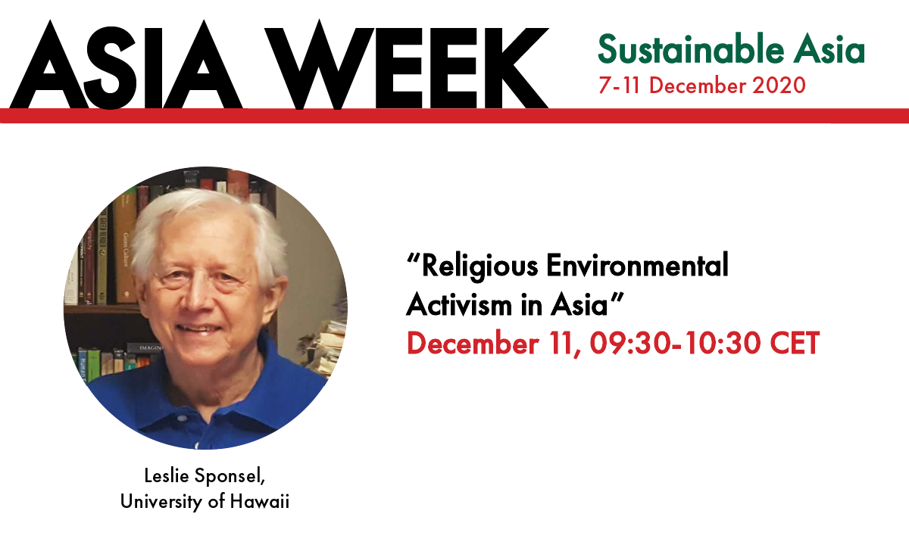

September 5, 2016, invited paper “Understanding of Spiritual Ecology Revolution,” for the workshop on “Ethics and ecology: Faith-based models for reconnecting with all sentient beings,” Honolulu, HI: International Union for the Conservation of Nature and Natural Resources Congress/World Conservation Congress.
December 11, 2020, invited presentation on “Spiritual Ecology” for the eConference Norwegian Asian Studies Network, University of Oslo, Oslo, Norway
June 17, 2021, “Natural Wisdom: Meditations on Buddhist Ecology and Environmentalism,” Research Center for Buddhist Studies, College of Language and Cultural Studies, Royal University of Bhutan, Zoom Lecture, https://www.youtube.com/watch?v=8tvArbu3_Pk.
July 17, 2021, “Spiritual Ecology: Four Elemental Questions,” Spiritual Citizenship eConference on Spiritual Activism, Embodied Philosophy, New York City, https://www.embodiedphilosophy.com/.
April 18, 2022, “Natural Wisdom: Meditations on Buddhist Ecology and Environmentalism,” Hawai`i International Association of Buddhists, Honolulu, Hawai`i, annual membership meeting will follow the Earth Day program https://www.hawaiibuddhists.org/posts/2022earthday.
August 26, 2012, “Peace of the Rainbow” radio interview with Sonia Fabrigas on K108 (50 minutes). Website: http://www.peaceoftherainbow.com/.
September 22, 2012, “Issues That Matter” television interview with Native Hawaiian anthropologist Dr. Lynette Cruz on local public access television Channel 53 NATV (60 minutes).
Coleman, Stuart H., 2015, “The Rise of Spiritual Ecology,” Green: Hawaii`s Sustainable Living Magazine
DeMello, Croydon, 2021 (July 26), podcast interview with “Leslie E. Sponsel on Spiritual Ecology,” Toronto, Canada: The Focal Thought #55 (33 minutes) https://www.youtube.com/watch?v=xxIdFjhpBfA
“Natural Wisdom: Meditations on Buddhist Ecology and Environmentalism,” Research Center for Buddhist Studies, College of Language and Cultural Studies, Royal University of Bhutan, Zoom Lecture, June 17, 2021, https://www.youtube.com/watch?v=8tvArbu3_Pk.
The Kerulos Center for Nonviolence – Living One – Spring 2023 Series – Earth Restoration and the Evolution of Human Consciousness Spiritual Ecology interview with Leslie E. Sponsel, June 12, 2023 (63 minutes) https://www.youtube.com/watch?v=nsPUzFq3MU4
Charcoal portrait by Thai artist Thepsiri Suksopa at Chiang Mai in July 2005.

Concept
Spiritual ecology is a complex. diverse, and dynamic arena at the interfaces of religions and spiritualities on the one hand and on the other environments, ecologies, and environmentalisms with intellectual, spiritual, and practical components.
Book
Drawing on the wisdom of centuries and a wealth of different traditions, spiritual ecology can generate the profound transformations that are required if ecosanity is to be restored.
Author
Author documents and explains the thoughts, actions, and legacies of spiritual ecology's pioneers from ancient times to the present, demonstrating how the movement may offer the last chance to restore a healthy relationship between humankind and nature.
Contact Information
Dr.Leslie E.Sponsel Professor Emeritus Department of Anthropology University of Hawaiʻi 2424 Maile Way - Saunders Hall 321 Honolulu, HI 96822-2223 USA Email: les.sponsel@gmail.com